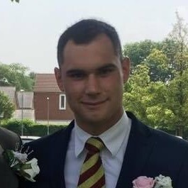

Alex Saxelby

Summary
Highly skilled and dedicated Mechatronics Technician with extensive experience in mechanical and electrical systems across diverse industries.
Proven expertise in mounting, wiring, and troubleshooting complex systems, including atomized test benches and armoured track vehicles. Strong background in international technical support, pneumatic and hydraulic circuit creation, and precision calibration of measurement instruments.
Adept at managing teams and organizing activities to ensure efficient workflow. Demonstrated ability to solve problems and perform repairs on electrical, mechanical, and computer applications. Proficient in various technical and computer applications, with a strong adherence to health and safety protocols.
Ready to leverage skills and experience to contribute effectively in a challenging and dynamic environment.
Work History
Mechatronics Technician
Cirillo Automazione - Italy
Jan 2021 - Jul 2024
- Mechanical and electrical mounting of atomised test benches.
- Complete wiring of electrical cabinets with the use of electrical diagrams.
- International support technician
- Creation of pneumatic and hydraulic circuits following a diagram.
- Calibration of various measurement instruments
- Electrical, mechanical and computer applications problem solving and repair.
- Fine tuning of mechanical groups with the use of a specific in-house software and manual adjustments.
- Overseeing personnel and organising activities.
- Toubleshooting communication systems.
- Electrical testing and developing of car batteries for big manufacturers such as Mercedes, Audi and Ferrari.
Armoured track vehicle mechanic
M&E Global
Jun 2020 - Jan 2021
- Ordinary maintenance to set procedures.
- Electrical, mechanical and hydraulic problem solving and repair.
- Removal of engine and transmission for maintenance
- Experience with vehicles such as AS-90, M113, M1 Abrams
Education
Higher Level Diploma including Maths, English, Spanish, German, Italian and Science
Liceo Linguistico e Psicopedagico | Italy
Skills
- Customer Service
- Mechanical fitting
- Mechanical maintenance
- Component replacement and repairs
- Technical troubleshooting
- Diagnosis and fault finding
Removal of engine and transmission for maintenance
- Problem solver
- Technical reporting
- Electrical assembly
Other